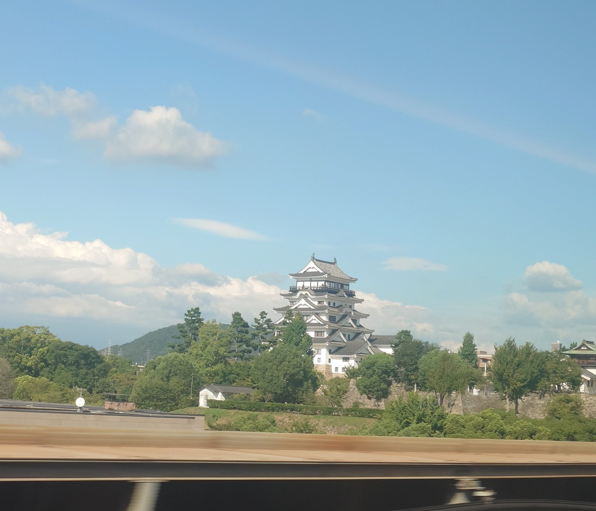

- 座位侧
- E座侧西行在右侧，往新大阪在左侧。
- 观看方向
- 紧邻福山站
背後的故事
白色城堡另一面的铁甲
福山站旁，一座白塔几乎紧邻你的车厢出现。这是天守，日本城堡主要的防御塔楼。姬路与冈山在城镇远方，福山却把石垣与层叠屋顶带到铁路近旁。列车所见的白色一面，另有出人意料的对照：另一侧藏着覆铁的北墙。
福山首任城主水野胜成於1619年接掌此地，1622年完成城堡。当时日本由以江户（今日东京）为中心的德川幕府统治。在限制各地城堡数量的制度下，获准兴建大型新城十分罕见。福山既是地方政务中心，也是幕府在西日本的支援据点。
装饰性的破风与白墙赋予天守优雅外观。北侧另有任务：城界就在附近，因此以铁板强化较脆弱的一面。福山市称它为日本唯一外墙覆铁的天守。白色南面与黑色北面，展现同座塔楼的两种功能：展示权威与准备防御。
部分建筑来自京都伏见城，其中有较小的防御塔楼伏见橹。梁上发现的铭文有助确认来源。与重建主天守不同，它在1945年空袭中留存，保有城堡初期的建筑。城内因此并存原有建筑与後世复原。
今日可见的天守并非原木造塔楼。1945年福山空袭的大火烧毁它，居民与企业捐款使其於1966年重建。白塔也诉说城市在战後找回熟悉地标的故事。
2022年筑城400周年修复，依据历史照片与其他资料，复原北面铁板与顶层窗户设计。从列车这一侧无法直接看见黑墙；但知道它存在，白色屋顶的一瞥就多了一层意义：车站地标背後，还有防御、损失与复原的历史。
观看重点
如何从车窗找到它
福山站旁留意E座侧。从新大阪西行时在右侧，返回新大阪时在左侧。从树上方找出石台基上的白墙与数层屋顶。这里看的是车站近处，不必搜寻远方天际线。
列车进入车站区前就准备好。城紧邻路线，可能在你举起相机前已掠过。停站列车与通过列车的体验不同，没有适用於所有班次的单一观赏时间。
铁路上看见的是南面。铁板在天守後方北面，所以别等待黑墙在此车窗出现。先找到白塔，再用官方指南探索另一面。
摄影提示
取景留一些空间给石垣
先用照片认出城，再以包含树木与石垣的适度广角等待。放得太大，近距离移动的主体更难追踪。天守周围保留一些空间，也能呈现它离铁道多麽近。
留意反光，在座位上舒适拍照。如果调相机会错过风景，就先用眼睛欣赏塔楼。提供的照片只记录一班列车的一个瞬间；你的旅程中，尺度、光线与遮蔽物可能不同。
地图
城与铁路
列车观赏位置标示福山站，并非照片拍摄点，也不保证该范围一定可见。
在Google Maps打开 ↗